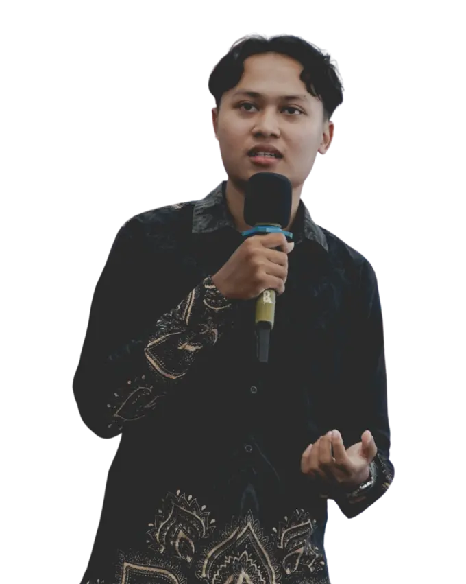

At PERFECT10 AI ↗, I manage teams building RAG, vision, and evaluation systems, backed by two years in AI/ML engineering. AI drafts, humans own decisions, and nothing ships without evidence.

Tap to switch. Hover the portrait to peek.
Work delivered for clients in Singapore and Australia